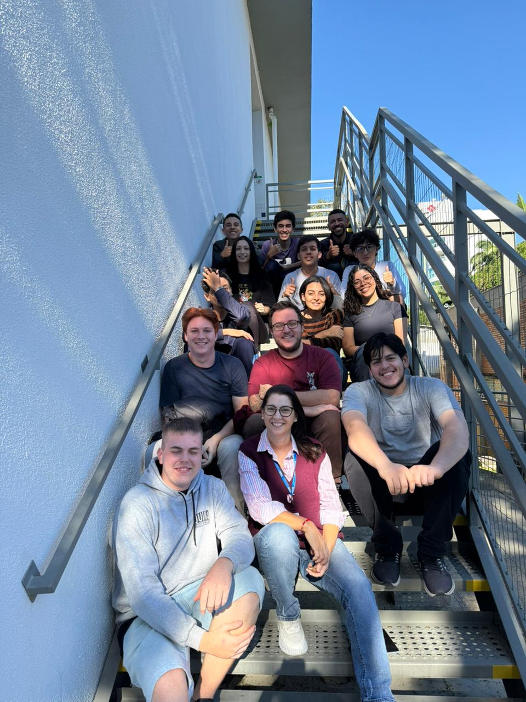

Este relatório apresenta um resumo sobre a area de Front-end, minha convivencia com os colegas de sala, como entrei no curso e minhas expectativas para o futuro.
O Front-end a a area responsável pela parte visual e interativa de sites e sistemas. Ele utiliza tecnologias como HTML, CSS e JavaScript para criar páginas organizadas, responsivas e fáceis de usar. Essa área exige criatividade, lógica, atenção aos detalhes e preocupação com a experiência do usuário.
A convivência com os amigos de sala tem sido muito importante para o aprendizado. A troca de ideias, a ajuda nas dúvidas e o trabalho em equipe tornam o ambiente mais motivador. Foi muito bom fazer novas amizades , apesar de mais jovens , trazem experiencias e conhecimentos incriveis.

Entrei no curso com o objetivo de aprender mais sobre tecnologia e me preparar para o mercado de trabalho. A área de desenvolvimento chamou minha atenção por oferecer muitas oportunidades e por estar presente em diferentes setores da sociedade.
Para o futuro, pretendo continuar estudando Front-end, aprofundando meus conhecimentos em HTML, CSS, JavaScript e outras ferramentas usadas no mercado. Meu objetivo é conquistar uma oportunidade profissional na área de tecnologia e construir uma carreira sólida.
O curso tem contribuído para meu crescimento pessoal e profissional. A aprendizagem em Front-end, junto com a convivência com os colegas, fortalece minha preparação para novos desafios e aumenta minha motivação para seguir evoluindo na área de tecnologia.